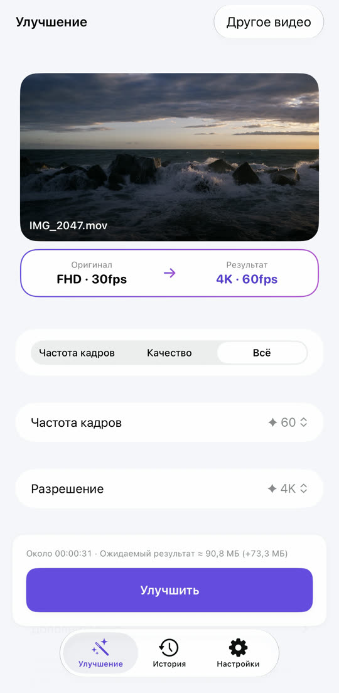
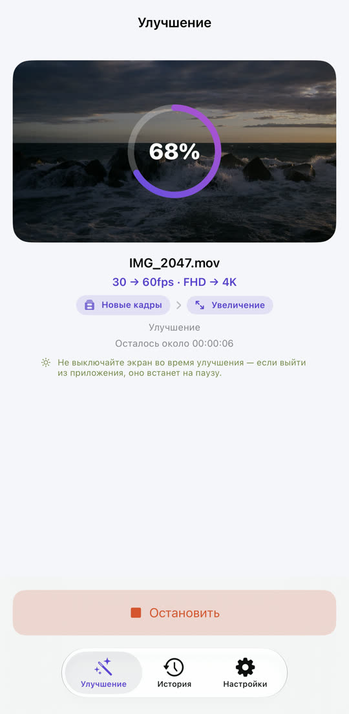
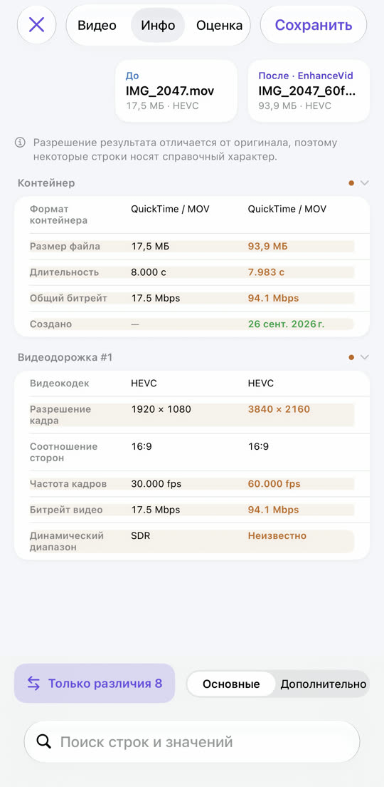
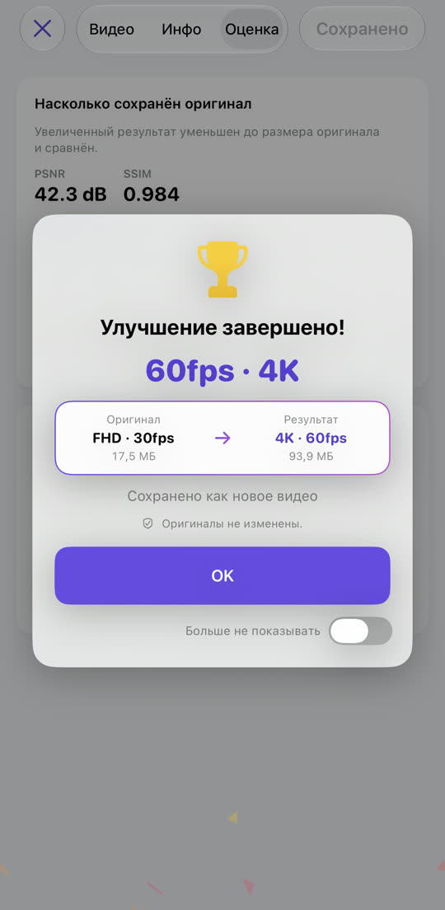

Дёрганое видео — плавное.
Размытое видео — чёткое.
30 → 60 к/с, Full HD → 4K. EnhanceVid рассчитывает новые кадры между снятыми и повышает разрешение для большей детализации. Всё происходит на вашем iPhone, а результат сохраняется как новое видео рядом с нетронутым оригиналом.
Загрузить в App StoreБесплатно · iOS 26 и новее · iPhone · iPad · Mac с чипом Apple

Меньше размытия, больше деталей.
Разрешение повышается с помощью Apple MetalFX. Потяните линию, чтобы сравнить.

 ОригиналУлучшено
ОригиналУлучшено
Пример — увеличенный оригинал в низком разрешении рядом с улучшенной версией.
Рывки превращаются в плавное движение.
Между исходными кадрами рассчитываются новые. Смены сцен никогда не смешиваются — без призрачных следов.
Движение преувеличено, чтобы разница была заметна.
Выберите, запустите, сравните, сохраните.



Всё нужное уже внутри.
Уберите зерно с видео, снятого при слабом свете. На поддерживаемых устройствах.
4K 60 к/с в 30 к/с, 4K в Full HD — понижать тоже можно.
Просмотр рядом, таблица параметров и оценки качества (PSNR, SSIM, по желанию VMAF).
HDR и Dolby Vision, снятые на iPhone, остаются в HDR.
Видео из «Фото» и «Файлов», включая MKV, WebM и AVI.
Результат сохраняется как новое видео. Оригинал никогда не меняется и не удаляется.
Ничего не загружается, аккаунт не нужен. Бесплатно, за счёт рекламы — Конфиденциальность